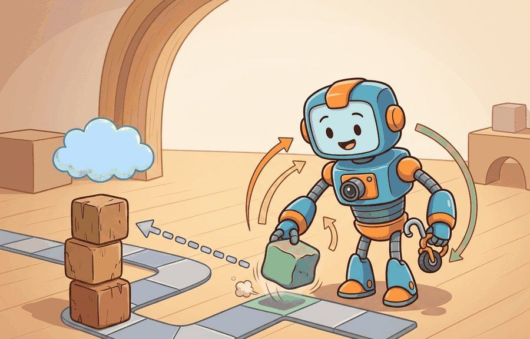
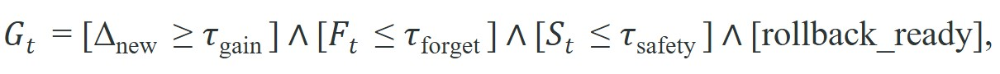
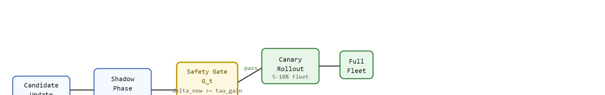

"I can update myself safely, provided someone remembers the word rollback."
A Cautious Continual Learner

This section assumes familiarity with catastrophic forgetting from section 57.2 and the online-adaptation loop from section 57.3. The safety-gate variables depend on the safety-event and intervention concepts introduced in section 54.2. The versioned deployment stack discussed here connects forward to the deployment architecture in section 55.4, where rollout controllers and monitoring dashboards are covered in detail.
A warehouse robot performs flawlessly on Monday. By Friday, after three incremental updates to handle new shelf configurations, it begins clipping corners it used to clear. No single update broke it; the failure emerged across versions, invisible to any one-shot evaluation. Embodied AI systems that learn continuously face exactly this hazard: every update is a small bet, and the house edge only shows in longitudinal data. This section equips you to build and apply a rigorous safety gate, track model quality across versions, and know when to roll back before a good-on-paper update becomes a problem in the field.
Safety in continual learning is mostly about release discipline. A candidate update becomes dangerous not only when it is wrong, but when the system lacks enough versioned evidence to know that it is wrong quickly.
Prequential evaluation is like a head chef who tastes every dish that leaves the kitchen, not just the recipe on paper. Each small seasoning adjustment seems fine in isolation, but the chef's running palate catches the moment the cumulative drift has tipped from "subtly different" to "wrong." A cook who only taste-tests at the start of a shift and then trusts the written recipe will miss how three tiny salt additions across the evening have made the soup unservable.
As Figure 57.4A illustrates, safe continual learning rests on three pillars: versioned evaluation, staged rollout, and rollback evidence. Prequential evaluation (short for predictive-sequential: test each example before training on it, accumulating a running score) and versioned evaluation track performance as the environment changes over time. Concretely, at each version boundary $t$ the running score updates as an accumulation over the examples seen since the last checkpoint, so the score at version $t$ reflects every update up to and including $t$, not just the most recent one; this is what lets prequential evaluation catch drift that no single one-shot test would expose, because a one-shot test only ever compares the current version against a fixed reference, while the running score carries forward the residue of every prior update. Prequential scoring is the natural evaluation companion to the online-adaptation loop that drives these updates. A minimal safety gate evaluates the following, where shadow evaluation (scoring a candidate update in parallel with the live model, without letting its outputs reach the robot, so it earns a track record before it can do harm; the mechanics are worked through in the next section) is the phase in which the gate variables below are first measured:

where $\Delta_{\text{new}}$ is gain on new tasks, $F_t$ is forgetting, and $S_t$ is safety-event rate. Promotion should require the entire gate to pass. Every term earns its place. In practice, teams that track only $\Delta_{\text{new}}$ typically ship as soon as gain exceeds threshold, then discover field regressions within a handful of subsequent updates; teams gating all four conditions tend to catch the same class of regression before any single update leaves the canary zone, where a canary zone is the small slice of the fleet (typically 5 to 10 percent) that receives a candidate update first so that any regression is contained to a limited blast radius. The cost gap can be substantial: a regression caught at the canary stage typically requires reverting one update and one evidence bundle, whereas the same regression found several updates later can force engineers to audit a much larger volume of robot-hours of logs just to isolate which version boundary introduced the fault.
So far: safe continual learning tracks a running (prequential) score across versions rather than testing each update in isolation, and promotion is gated on four jointly-required conditions (gain, forgetting, safety-event rate, rollback readiness) rather than on gain alone.

| Variable | What It Measures | Why It Matters |
|---|---|---|
| $\Delta_{\text{new}}$ | gain on the new distribution | justifies adaptation effort |
| $F_t$ | retained-task degradation | protects prior competence |
| $S_t$ | safety-event or intervention rate | prevents unsafe promotion |
| rollback_ready | operational reversibility | limits blast radius of mistakes |
Figure 57.4B traces how a candidate update moves through this pipeline: shadow evaluation, the four-variable gate, and then either canary rollout or rollback. Shadow evaluation is the phase in which the candidate scores incoming examples in parallel with the live model but its outputs never command the robot, so it earns a track record without any risk to operation. A warehouse robot update may improve navigation around new shelving layouts, but it should still be blocked if safety-event rate rises or rollback is not prepared.
gate = {
"new_task_gain": 0.07,
"forgetting": 0.02,
"safety_event_rate": 0.0,
"rollback_ready": True,
}
accept = (
gate["new_task_gain"] >= 0.03
and gate["forgetting"] <= 0.03
and gate["safety_event_rate"] <= 0.005
and gate["rollback_ready"]
)
print({"accept": accept, **gate}){'accept': True, 'new_task_gain': 0.07, 'forgetting': 0.02, 'safety_event_rate': 0.0, 'rollback_ready': True}Trace the gate $G_t$ with two candidate updates against thresholds $\tau_{\text{gain}} = 0.03$, $\tau_{\text{forget}} = 0.03$, $\tau_{\text{safety}} = 0.005$.
Candidate A: measured $\Delta_{\text{new}} = 0.07$, $F_t = 0.02$, $S_t = 0.0$, rollback_ready = true. Evaluate term by term: gain check $0.07 \ge 0.03$ is true; forgetting check $0.02 \le 0.03$ is true; safety check $0.0 \le 0.005$ is true; rollback flag is true. Conjunction: true AND true AND true AND true = PASS. Candidate A advances to canary rollout.
Candidate B: measured $\Delta_{\text{new}} = 0.11$ (a bigger gain than A), $F_t = 0.01$, $S_t = 0.009$, rollback_ready = true. Term by term: gain check $0.11 \ge 0.03$ is true; forgetting check $0.01 \le 0.03$ is true; safety check $0.009 \le 0.005$ is false; rollback is true. Conjunction: true AND true AND false AND true = FAIL. Despite the larger gain, the elevated safety-event rate (0.009 versus the 0.005 ceiling, an 80% overage) blocks promotion and triggers rollback. This is the gate doing exactly its job: it refuses to trade a measurable capability gain for an unmeasured safety regression.
The expected output should support a release decision directly. A model that gains more on new tasks but fails rollback readiness or safety rate should still be rejected.
The promotion gate is basically a bouncer for your model: it does not care how impressive your gains are on the new tasks if you cannot show a valid rollback_ready flag at the door.
Versioned model registries, rollout controllers, and experiment trackers help only if they preserve per-version evidence, rollback pointers, and panel definitions. A registry without evaluation provenance is just a storage service.
Temporal evaluation is often too short. A candidate may look stable over one day but fail after enough distribution shift, maintenance drift, or operator behavior changes accumulate.
A gate can pass on aggregate metrics while silently regressing on rare but costly events. Consider a robot update that reduces mean navigation time by 8% and holds forgetting at 1.5%, so every headline threshold clears. If the evaluation panel contains only 12 charger-docking attempts (because docking is rare in the shadow period), a 25% increase in docking-retry failures goes undetected. The gate passes; the update ships; field operators begin filing docking incidents within a week. The root cause is a panel that is representative on average but statistically underpowered for the events that matter most. Rare-event slices need their own thresholds and their own minimum sample counts before a gate can be considered complete.
When implementing rare-event slice guards, use scipy.stats.proportion_conftest (or the equivalent statsmodels.stats.proportion.proportion_effectsize power calculation) to compute the minimum sample count before the gate runs, not after. Set a hard floor, for example min_slice_n = 30, and short-circuit the gate with rollback_ready = False if any slice falls below it. A gate that simply skips underpowered slices silently passes on insufficient evidence, which is the failure mode described above.
A fleet Autonomous Mobile Robot (AMR) update may improve congestion handling in a new warehouse layout, but the deployment team should still require a versioned record of old-layout performance, charger-docking reliability, intervention rate, and rollback readiness before expansion beyond a canary zone.
Hardware-aware forgetting metrics (2024-2026). Standard forgetting scores treat the evaluation panel as fixed, but physical deployments violate this assumption because the robot body changes. Recent work from ETH Zurich's Robotic Systems Lab (Mittal et al., "Lift3D: Zero-Shot Lifting of Foundation Features for Closed-Loop Embodied Navigation," 2024, and related hardware-drift studies from the same group) shows that locomotion policies on ANYmal degrade against a fixed reference not because weights change but because joint stiffness shifts with wear. The open direction is to build forgetting metrics that condition on a hardware-state fingerprint extracted from torque telemetry, so that $F_t$ reports policy degradation separately from embodiment degradation.
Foundation-model-seeded continual learning (2024-2026). Large vision-language-action models such as Google DeepMind's RT-2-X and its successors (Embodied AI @ Google, 2024) provide a strong prior that reduces catastrophic forgetting on new manipulation tasks. Active research explores whether continual fine-tuning of these foundation priors can satisfy the four-variable gate with far fewer rollback events than task-specific policies, because the pretrained representations generalize across distribution shifts that would cause a narrow policy to forget.
Continual safety certification (2025-2026). Work from the Safe Robotics Lab at Carnegie Mellon (Dawson et al., "Safeguarded Continual Reinforcement Learning via Control Barrier Functions," 2025) applies control barrier functions as hard constraints during incremental updates so that $S_t$ is bounded by construction rather than monitored retrospectively. Extending this to full fleet deployments where robots share a continual-learning pool while maintaining per-robot CBF certificates is an active open problem.
Open problem for PhD students. No current benchmark captures coupled hardware-policy-environment drift across a multi-month real deployment. A tractable thesis contribution is a dataset and evaluation protocol that co-records ROS 2 joint-torque logs, versioned policy checkpoints, operator intervention events, and scheduled maintenance records on a fleet of at least five robots over six or more months, then derives forgetting and safety-event metrics normalized against the hardware state at each evaluation checkpoint. This would let the community benchmark continual learning against physically grounded reference distributions rather than static test sets.
The gate formula is only as useful as the numbers you plug in. Teams calibrate $\tau_{\text{forget}}$ by examining the historical incident record: if past incidents show that a 4% degradation on charger-docking reliability caused measurable operator overload, then $\tau_{\text{forget}} = 0.03$ is a reasonable ceiling (below the observed pain threshold with a small buffer). Similarly, $\tau_{\text{safety}}$ is often derived from the baseline intervention rate in production, for example, 0.003 interventions per hour, with the gate threshold set at 1.5x that baseline. Without this historical grounding, thresholds are arbitrary and the gate gives false confidence. The "when" this matters most is early in a program, before incident history exists: in that case, use the most conservative values available from the nearest analogous deployment, document that assumption explicitly, and tighten thresholds as evidence accumulates.
Can you state the thresholds for gain, forgetting, safety, and rollback readiness that define promotion in your setting? If not, the release gate is still qualitative rather than operational.
Evaluation over time should also preserve rare-event slices. A candidate update may improve daily averages while regressing on low-frequency but high-cost events such as near-collision recoveries, charger docking retries, or human handoff failures.
Tracking those rare-event slices across many versions is only possible if the underlying evidence is stored in a structured, queryable form. In a real deployment stack, teams keep a versioned evidence bundle: a timeline that joins the model registry, shadow metrics, canary allocation, intervention budget, and rollback event log. This bundle matters for embodied systems because a regression cannot be paused. A robot mid-task with a faulty update may drop a payload or collide before a human intervenes. Without a versioned record, the team cannot tell whether new weights, a hardware change, or operator drift caused the incident. Every promotion event writes its gate-variable snapshot, panel definition, and rollback pointer to a shared artifact store. At incident time, a query joins on the robot's embodiment identifier and first-symptom timestamp, then retrieves the exact approved version and its supporting evidence. Prometheus or Grafana dashboards, registry manifests, and replay archives expose drift and rare-event regressions across weeks rather than single evaluation windows. The key question is whether the team can show when competence improved, when risk rose, and which version boundary caused each change.
Many teams operationalize this with PyTorch or JAX model versions, ROS 2 event logs, Prometheus counters for interventions, and Weights and Biases run lineage for the candidate update. The value of this stack is the ability to ask a precise question, such as which canary batch first showed a rise in monitor alarms, then recover the exact replay slice and rollback target that closed the incident. Without that chain, continual learning remains hard to audit over long horizons.
Long-horizon evaluation must also account for changing hardware and workflow. A fleet may receive a software update just as wheel wear increases, battery behavior shifts with temperature, or operators adopt a new override pattern. A serious audit therefore links maintenance records, embodiment identifiers, and operational context to the versioned evidence bundle. Otherwise the team blames learning for a safety regression whose real cause was a coupled shift in hardware, environment, or procedure.
Because those coupled shifts keep arriving long after a candidate clears the gate, the safety question does not end at release but reopens on every subsequent day of operation.
A common assumption is that once a continual learning update passes the safety gate at release time, the system is safe indefinitely and no further structured evaluation is required. This is wrong in embodied AI because the operating environment continues to shift after deployment: wheel wear, battery aging, operator habit changes, and gradual distribution shift can all degrade a policy that was genuinely safe on release day. The correct mental model treats the gate as a one-time entry condition, not a permanent safety certificate. Versioned evaluation must run continuously post-deployment, with the same forgetting, safety-event, and rare-event slice checks applied at regular intervals so that silent regressions are caught before they cause physical incidents.
A model that learns without a rollback path is not a continual learner; it is a one-way door.
Waymo gates every neural-network model change through large-scale shadow evaluation and structured simulation before any release reaches the road, then ships to a small geofenced (restricted to a predefined geographic operating area) canary fleet while monitoring intervention and safety-event rates against the prior version. A new model that improves perception on a fresh scenario but raises disengagement rate (the rate at which the autonomy hands control back to a human safety driver) is held back, mirroring the four-variable gate: gain alone never justifies promotion without bounded forgetting, bounded safety events, and a reversible deployment path.
Goal: empirically observe how a four-variable gate catches a regression that aggregate accuracy hides, and how rare-event slices change the decision.
Tools needed: Python with river (online learning), scikit-learn, and matplotlib. Estimated 15-30 minutes.
Steps: Generate a prequential stream by concatenating two scikit-learn make_classification distributions to simulate distribution shift (the "old task" then the "new task"). Train an incremental classifier (for example river.tree.HoeffdingTreeClassifier) and, at each version checkpoint of 500 examples, compute four gate variables: new-task gain (accuracy delta on the recent window), forgetting (accuracy drop on a frozen old-task panel held aside at the start), a synthetic safety-event rate (fraction of errors on a rare minority class you inject at 3% frequency), and a rollback_ready flag set to false whenever the rare slice has fewer than 30 samples in the window.
What to vary: the rare-class injection frequency (try 1%, 3%, 10%), the forgetting threshold $\tau_{\text{forget}}$, and the minimum slice sample floor.
What to observe: find a checkpoint where overall accuracy stays flat or improves while the rare-slice error rate spikes. Confirm that the aggregate-only view would PASS the update while the four-variable gate FAILS it, and watch the rollback_ready short-circuit trigger when the rare slice is underpowered. This reproduces the underpowered-panel failure mode from this section on real numbers.
Safe continual learning depends on versioned evidence, staged rollout, and rollback readiness, not on optimism about adaptation alone.
Define a promotion gate for a humanoid locomotion update. Include thresholds for new-task gain, forgetting, intervention rate, and rollback readiness.
Kirkpatrick, J. et al. Overcoming catastrophic forgetting in neural networks. PNAS, 2017.
Use for regularization-based retention and its assumptions.
Lopez-Paz, D. and Ranzato, M. Gradient Episodic Memory for Continual Learning. NeurIPS, 2017.
Use for replay-constrained updates and task-stream evaluation.
Beginner (weekend): Build a versioned safety gate dashboard using Gymnasium: train a Cartpole agent with incremental updates, log gain, forgetting, and episode-failure rate per version into a SQLite evidence bundle, and display a pass/fail gate decision in a simple matplotlib chart. The key challenge is defining a fixed evaluation panel that does not shift between versions so that forgetting is measured against a stable reference.
Intermediate (1-2 weeks): Implement a prequential continual-learning loop for a PyBullet mobile robot navigating an environment where obstacles are added in stages; use ROS 2 to publish intervention events whenever the robot requests a reset, feed those counts into the four-variable gate from this section, and trigger an automatic rollback to the previous checkpoint when any threshold is exceeded. The key challenge is maintaining a versioned evidence bundle that links ROS 2 event logs, policy checkpoints, and gate snapshots so that any incident can be traced to the exact version boundary that caused it.
Next, move to Chapter 58, where these mechanisms connect to broader frontier questions.